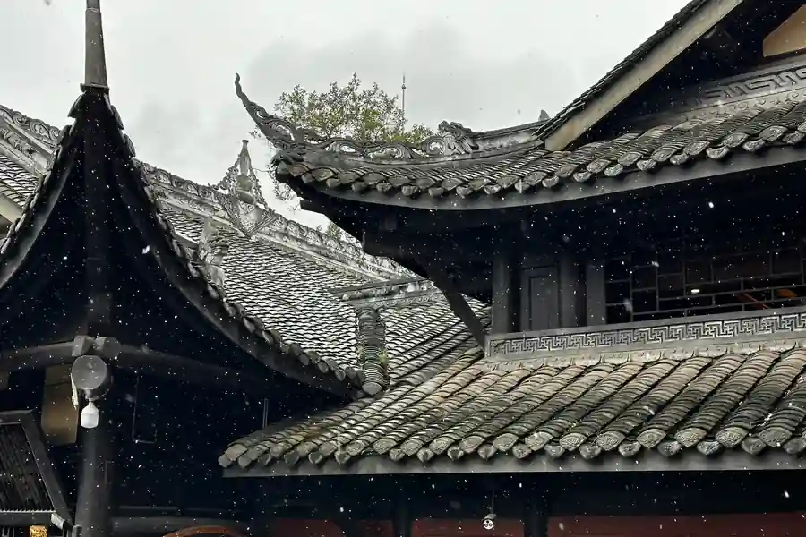

Suining in Pictures
Real scenes from Suining — landmarks, streets and everyday life.

Suining Airport Transfer & Private Car
Licensed professional driver in the Lotus City of Sichuan. Fixed price. Visit Guangde Temple, the giant Buddha statues, and the ancient silk capital — with a private car and driver for your comfort.
Suining at a Glance
Suining (遂宁) — "Sui State Peace" or "Prosperous Peace" — is a prefecture-level city in the Sichuan Basin in central Sichuan Province, China. Located on the Chengdu–Chongqing economic corridor, Suining is known for the Guangde Temple (广德寺) — one of the most sacred Buddhist temples in Sichuan — and the giant Buddha statues at Huayan Temple (华严寺). Suining is famous for its lotus flowers (荷花) — earning it the nickname "Lotus City (荷莲之都)" — and for being the hometown of the celebrated polymath Zhu Zaiyu (朱载堉), the 16th-century scientific genius who first calculated the 12-tone equal temperament system used in Western music. The city is also home to the Shenfu cultural zone and is a major producer of fine silk.
Guangde Temple — One of Sichuan's Most Sacred Buddhist Temples
Guangde Temple (广德寺) — located on Guangde Mountain (广德山) in Suining — is one of the most important Buddhist temples in Sichuan Province, with a history dating back to the Sui Dynasty (618 CE). The temple is famous for its "Three Wonders" (三绝): the ancient banyan tree (古榕) planted during the Tang Dynasty, the bronze bell (广德寺铜钟) from the Ming Dynasty weighing over 15,000 jin, and the imperial inscription plaque (皇封玉印) granted by Emperor Yongle of the Ming Dynasty. The temple has been an important Buddhist center for over 1,400 years and is a living center of Buddhist worship and culture.
The temple complex includes the Mahavira Hall (大雄宝殿), the Guanyin Hall (观音殿), and the Pagoda of the Seven Buddhas (七佛塔). The annual Guangde Temple Festival (广德寺庙会) — held on the 19th day of the second lunar month — attracts tens of thousands of Buddhist pilgrims and visitors from across Sichuan and Chongqing.
Name Origin & History
The name Suining (遂宁) — "Sui State Peace" or "Prosperous Peace" — was first used as a place name during the Sui Dynasty (581–618 CE). The character xpress the desire for peace and prosperity in the region after a period of political instability. The name Suining has been in use for over 1,400 years, making it one of the oldest continuously used city names in Sichuan.
Zhu Zaiyu — The Scientific Genius from Suining
Suining's most famous historical figure is Zhu Zaiyu (朱载堉, 1536–1611) — a 16th-century polymath prince of the Zhu Yang (朱阳) lineage of the Ming Dynasty imperial family. Zhu Zaiyu was born in Suining and spent much of his life there in scholarly retreat. He is credited with the first mathematical calculation of 12-tone equal temperament (十二平均律) — the system that divides the octave into 12 equal semitones, which is the foundation of Western music. His calculations, published in his 1584 work Labyrinth of Music (律学新说), predate the European rediscovery of equal temperament by about a century.
Zhu Zaiyu was also a prolific researcher in astronomy, mathematics, calendar science, and musicology. His tomb and memorial hall (朱载堉墓园) in Suining's Shenfu cultural zone commemorate his scientific contributions. He is a source of great pride for the people of Suining and is sometimes called "the musical Einstein of China."
Geography & Location
Suining is located in the central Sichuan Basin, approximately 110km from Chengdu and 140km from Chongqing, on the Chengdu–Chongqing economic corridor. The city sits on the Jialing River (嘉陵江) and its tributaries, which flow through the relatively flat Sichuan Basin terrain. The region is known for its fertile agricultural land, extensive lotus ponds, and silk production. The city's nickname "Lotus City (荷莲之都)" reflects the abundance of lotus flowers that bloom across the region's ponds and wetlands during the summer months.
Top suining Attractions
Visit Guangde Temple, Lingquan Temple, Suining Dead Sea (salt lake floating), and the Song Porcelain Museum.
Popular Suining Routes
Fixed-price private car service for Suining's most popular journeys.
🛕 Guangde Temple Half-Day Tour
From ¥455($64.08)~15 km · 30 min drive · 3–4 hours · Business vehicle
Your driver takes you to Guangde Temple (广德寺) — approximately 15km from central Suining — for a half-day visit to one of Sichuan's most sacred Buddhist temples. Your driver waits while you explore the temple complex, the ancient banyan tree, the Ming Dynasty bronze bell, and the imperial plaque. The temple is most atmospheric in the early morning when the Buddhist worshippers are present.
⛰️ Huayan Temple Giant Buddha
From ¥455($64.08)~20 km · 40 min drive · 3–4 hours · Business vehicle
Your driver takes you to Huayan Temple (华严寺) on the cliff face near Suining to see the remarkable giant Buddha statue carved into the rock face. The dramatic cliffside temple complex — with its multi-level pavilions and terraces — offers both cultural significance and spectacular views. Your driver waits during your visit.
🏘️ Chengdu Day Trip
From ¥240($33.8)~110 km · 1.5 hr drive · Full day · Business vehicle
Your driver takes you to Chengdu — approximately 110km from Suining (1.5 hours by car) — for a full day visiting the capital of Sichuan. Destinations include the Jinsha archaeological site, the Sichuan Opera face-changing show, Chunxi Road shopping district, and the historic Kuanzhai Alley. Your driver knows the best routes, parking locations, and timing for Chengdu's notorious traffic.
🏞️ Guanyin Airport → Suining City
From ¥240($33.8)~25 km · 40 min · Economy/Business/MPV
Suining Guanyin Airport (XIZ) is approximately 25km from the Suining city center (40 minutes by car). Your driver meets you at the airport arrival hall with a name board and drives you directly to your Suining hotel or to the Guangde Temple direction.
Transparent Pricing in Suining
Published rates, no estimate games. Check the numbers yourself before you book — and the price you see is the price your driver is paid from.
Fixed Price List — 遂宁 (Suining)
Published rates from our 2026 quote sheet. Renminbi first, USD for reference at 1 USD = ¥7.10. Every price below already includes tolls, parking, driver service and free airport waiting time (up to 60 minutes after your flight lands) — nothing is added on the day.
🛬 Airport & Intercity Transfer
One flat fare for airport pickup, drop-off or city-to-city — intercity costs the same as the airport run. 35 km and 60 minutes included; beyond that we charge by the minute and the kilometre at the rates shown.
| Vehicle | Seats | Bags | Fixed fare | USD | Beyond 35 km / 60 min |
|---|---|---|---|---|---|
| 4-seat Economy Sedan | 4 | 2 | ¥240 | ≈ $33.8 | ¥1.22/min · ¥5.3/km |
| 4-seat Comfort Sedan | 4 | 2 | ¥343 | ≈ $48.31 | ¥1.34/min · ¥5.87/km |
| 6-seat Business Van | 6 | 3 | ¥418 | ≈ $58.87 | ¥1.43/min · ¥6.24/km |
| 8-11-seat Business Van | 11 | 4 | ¥671 | ≈ $94.51 | ¥1.86/min · ¥8.11/km |
| 12-18-seat Minibus | 18 | 4 | ¥780 | ≈ $109.86 | ¥2.07/min · ¥9.05/km |
| 19-55-seat Coach Bus | 55 | 5 | ¥952 | ≈ $134.08 | ¥2.36/min · ¥10.3/km |
🚗 Hourly Private Charter
Book the car and the hours, keep the car for the day. Unused kilometres can be carried into the next tier, so a long day never turns into a penalty. The driver stays with you — you set the stops.
| Vehicle | 2h / 35km | 4h / 50km | 6h / 75km | 8h / 100km | 10h / 125km |
|---|---|---|---|---|---|
| 4-seat Private Car | ¥286 | ¥455 | ¥559 | ¥650 | ¥793 |
| 6-seat Business Van | ¥377 | ¥598 | ¥728 | ¥845 | ¥1027 |
| 8-11-seat Business Van | ¥543 | ¥861 | ¥1048 | ¥1217 | ¥1479 |
| 12-18-seat Minibus | ¥651 | ¥1033 | ¥1258 | ¥1460 | ¥1775 |
| 19-55-seat Coach Bus | ¥782 | ¥1240 | ¥1510 | ¥1752 | ¥2130 |
Why travellers book Suining with Chinawheely
Six things you get with every booking — in Suining and across all 346 cities on the platform.
Licensed travel agency, not a ride-hail app
Chinawheely is a registered travel agency (L-HUB-101603). Your booking is a travel contract with a licensed operator — not a broker handing your number to whoever answers the phone.
One locked price, shown before you pay
The price you see is the price you pay. Tolls, parking, driver service and airport waiting time are already inside it. No surge pricing, no meter, no cash-on-the-day surprise.
Flight tracked, waiting time on us
We watch your flight number in real time. If it lands late or is delayed, your driver shifts with it and the waiting time stays on us — not on your bill.
A licensed driver who knows the city
Every car is driven by a professional local driver who knows the routes, the shortcuts and the parking that actually works near the attractions — with English communication and a name board on arrival.
Free changes up to 48 hours before
Plans move. Reschedule or cancel any booking free of charge up to 48 hours before your scheduled pickup, straight from your confirmation link.
A real human on WhatsApp, 8AM–12AM Beijing time
One message reaches a person who can re-price, re-route or re-plan your trip on the spot. No ticket queue, no chatbot loop.
Book Suining at the published price
Pick your vehicle, see the fare line by line, and pay by PayPal or Alipay. Free changes up to 48 hours before pickup — or ask on WhatsApp and we will hold a car for you.
The quote is valid for 48 hours, and you can change or cancel free up to 48 hours before pickup.
Getting to Suining: Airports & Railway Stations
Getting to Suining by air, rail, or road
🚄 Suining Railway Stations
🗼 Suining Railway Station (遂宁站)
On the Chengdu–Chongqing high-speed rail corridor
Suining Railway Station (遂宁站) is on the Shanghai–Wuhan–Chengdu high-speed rail corridor, with frequent high-speed services to Chengdu (50 minutes), Chongqing (1 hour), Mianyang (1 hour), and Deyang (1.5 hours). The station is the main arrival point for high-speed rail visitors to Suining. The Chengdu–Chongqing high-speed rail line is one of China's busiest, so trains are frequent throughout the day.
✈️ Suining Guanyin Airport
🏞️ Suining Guanyin Airport (XIZ)
~25 km · 40 min drive
Suining Guanyin Airport (XIZ) — also called Suining Xuxiake Guanyin Airport — is approximately 25km from the city center (40 minutes by car). The airport has limited commercial flights, primarily serving routes to Beijing (3 hours), Shanghai (2.5 hours), Guangzhou (2 hours), Chengdu (45 minutes), and Shenzhen (2 hours). Most visitors arrive by high-speed rail. Your driver meets you at the airport arrival hall with a name board.
🌊 Chengdu Shuangliu International Airport (CTU)
~110 km · 1.5 hr drive
Chengdu Shuangliu International Airport (CTU) — Sichuan Province's main international hub — is approximately 110km from Suining (1.5 hours by car). Most international visitors fly to Chengdu first, then take the high-speed rail (50 minutes) or private car (1.5 hours) to Suining. The high-speed rail from Chengdu to Suining is the most practical option for most visitors.
🛶 Chongqing Jiangbei International Airport (CKG)
~140 km · 2 hr drive
Chongqing Jiangbei International Airport (CKG) — in the upstream Yangtze city — is approximately 140km from Suining (2 hours by car). Some visitors arrive via Chongqing — either by air or as part of a Chongqing–Suining itinerary — and continue by private car to Suining. A private car is the most comfortable option for this intercity journey.
Suining's Best Photo Spots
The places in Suining worth stopping for — and a car that waits while you take the shot.
🛕 Guangde Temple
Best at sunrise
Guangde Temple is one of Suining's signature sights and a natural place to stop for a photo. Your driver drops you at the entrance, waits while you shoot, and takes you on to the next stop in the same area.
🛕 Lingquan Temple
Best in the late afternoon
Lingquan Temple is one of Suining's signature sights and a natural place to stop for a photo. Your driver drops you at the entrance, waits while you shoot, and takes you on to the next stop in the same area.
📍 Suining Dead Sea
Best at dusk
Suining Dead Sea is one of Suining's signature sights and a natural place to stop for a photo. Your driver drops you at the entrance, waits while you shoot, and takes you on to the next stop in the same area.
🏛️ and the Song Porcelain Museum
Best in soft morning light
and the Song Porcelain Museum is one of Suining's signature sights and a natural place to stop for a photo. Your driver drops you at the entrance, waits while you shoot, and takes you on to the next stop in the same area.
Food & Shopping in Suining
🍜 Must-Try Suining & Sichuan Cuisine
Spicy Sichuan Noodles (担担面)
The Sichuan noodle (担担面, dān dān miàn) — noodles in a spicy sauce of Sichuan pepper, chili oil, preserved vegetables, and minced pork — is a beloved Sichuan street food found throughout Suining. The combination of the numbing Sichuan pepper and the spicy chili creates the signature "málà" (麻辣) flavor that defines Sichuan cuisine. Found at noodle shops and street food stalls throughout Suining's old town.
Sichuan Hotpot (四川火锅)
The Sichuan hotpot (四川火锅) — with its bubbling red broth, abundant Sichuan pepper, dried chili, and medicinal herbs — is the definitive Sichuan culinary experience. Suining's hotpot restaurants range from casual street-side establishments to more formal restaurants. The signature Sichuan version uses a "málà" (numbing and spicy) broth rather than the plain broth of northern styles. Best eaten with cold beer on a cool evening.
Suining Lotus Root Dishes (遂宁莲藕)
The lotus root (莲藕, lián ǒu) from Suining's lotus ponds — prepared in stir-fry, soup, or as a cold appetizer — is a distinctive local ingredient. Lotus root's distinctive hollow tubes — which appear when the root is sliced — are visually striking and symbolically associated with transparency and honesty in Chinese culture. The lotus root is often served stir-fried with pork or in a clear soup with Sichuan pepper.
Sichuan Mapo Tofu (麻婆豆腐)
Mapo tofu (麻婆豆腐, má pó dòu fu) — soft tofu in a spicy, numbing sauce of Sichuan pepper, chili bean paste (豆瓣酱), minced pork, and scallion — is one of Sichuan's most famous dishes. The best versions in Suining are found at traditional Sichuan restaurants where the tofu is made fresh daily and the sauce is prepared to order. The combination of the silky tofu and the fiery, numbing sauce is extraordinary.
Suining Silkworm Chrysalis (遂宁蚕蛹)
The silkworm chrysalis (蚕蛹, cán yǒng) — deep-fried until crispy and served with salt and Sichuan pepper — is a protein-rich traditional snack in Suining, a byproduct of the city's silk production industry. The crispy fried chrysalis has a nutty, slightly savory flavor that pairs well with cold beer. Found at traditional snack shops and street food stalls in Suining's old town.
🛍️ Shopping Destinations
Shenfu Cultural Zone Craft Shops
The Shenfu cultural zone (神富文化区) has a range of traditional craft shops selling local products including Zhu Zaiyu-themed items, traditional Sichuan crafts, and local specialty foods. The area's traditional architecture and pedestrian lanes create a pleasant shopping environment. The craft shops here offer higher quality items than the tourist stalls near major attractions.
Suining Silk Market
The Suining Silk Market — selling the city's famous silk products — offers a range of silk items from scarves and handkerchiefs to silk clothing and home textiles. Suining silk (遂宁丝绸) has been produced for over 2,000 years and is known for its quality. Buy from established shops where you can verify the quality by touch — the best silk should feel smooth and cool to the touch.
🎁 What to Buy in Suining
Suining Silk Products
Suining silk (遂宁丝绸) — produced in the city for over 2,000 years — is sold at the Suining Silk Market and at the Suining Silk Museum gift shop. The best products include silk scarves, silk handkerchiefs, silk clothing, and silk home textiles. Look for the "100% silk" label and verify quality by touch. The silk should feel smooth, cool, and slightly heavy.
Zhu Zaiyu Music Theory Books & Souvenirs
Zhu Zaiyu-themed souvenirs — including books on his music theory, reproductions of his scientific instruments, and themed cultural items — are available at the Zhu Zaiyu Memorial Hall gift shop. These make distinctive souvenirs that connect to Suining's unique scientific heritage. The best quality items are sold at the memorial hall itself.
Sichuan Pepper & Chili Products
Sichuan pepper (花椒, huā jiāo) and dried chili (干辣椒, gān là jiāo) — the signature ingredients of Sichuan cuisine — are sold at food markets and specialty spice shops throughout Suining. The Sichuan pepper from the mountainous areas of western Sichuan has a particularly intense flavor. Buy from established spice shops where the pepper is fresh and fragrant.
Intangible Cultural Heritage & Living Crafts of Suining
Traditional crafts and cultural traditions of Sichuan's Lotus City.
🧵 Suining Silk Weaving (遂宁丝绸编织)
The traditional craft of Suining silk weaving (遂宁丝绸编织) — producing silk fabric on traditional wooden looms — has been practiced in Suining for over 2,000 years. The craft involves cultivating mulberry trees, raising silkworms, reeling silk thread from cocoons, and weaving the thread into fabric on traditional wooden jacquard looms. The traditional patterns — including dragon, phoenix, and floral designs — are created by hand-controlled jacquard mechanisms. The craft is still practiced in Suining's silk workshops and documented in the Suining Silk Museum.
Where to see: Suining Silk Museum, traditional silk workshops.
🎵 Zhu Zaiyu's 12-Tone Equal Temperament (十二平均律)
Zhu Zaiyu's 12-tone equal temperament (十二平均律) — the mathematical system that divides the octave into 12 equal semitones — was first calculated by the Suining-born polymath Zhu Zaiyu in 1584. This system is the foundation of Western music and all modern music. The craft of traditional Sichuan music performance — including Sichuan opera, folk music, and ceremonial music — is connected to this musical heritage. Zhu Zaiyu's equal temperament theory is taught at music schools across China and is recognized as one of the most significant mathematical discoveries of the 16th century.
Where to learn: Zhu Zaiyu Memorial Hall, Suining Cultural Center.
🏯 Guangde Temple Buddhist Culture (广德寺佛教文化)
The Buddhist culture of Guangde Temple (广德寺佛教文化) — with over 1,400 years of continuous Buddhist practice — is one of the most important living Buddhist traditions in Sichuan. The temple's "Three Wonders" (三绝) — the Tang Dynasty banyan tree, the Ming Dynasty bronze bell, and the imperial inscription plaque — are physical manifestations of this living tradition. The annual Guangde Temple Festival — with its Buddhist ceremonies, pilgrimages, and temple fair — is the most important expression of this living cultural tradition.
Where to experience: Guangde Temple, annual Guangde Temple Festival (second lunar month, 19th day).
🎭 Sichuan Opera Face-Changing (川剧变脸)
Sichuan Opera face-changing (川剧变脸, chuān jù biàn liǎn) — the dramatic theatrical technique of rapidly changing painted masks to reflect emotional shifts — is one of China's most famous theatrical art forms. While Chengdu is the center of Sichuan Opera, Suining has its own local opera tradition and performers. The face-changing technique — where performers change masks in a blink of an eye using hidden mechanisms — is a thrilling spectacle. This art form is protected as a national intangible cultural heritage.
Where to see: Chengdu Sichuan Opera theaters (most authentic), Suining Cultural Center performances.
🌸 Lotus Craft & Lotus Art (荷花艺术)
The traditional craft of lotus-themed art (荷花艺术) — including lotus painting, lotus carving, lotus-themed ceramics, and lotus-themed embroidery — is a distinctive local art tradition in Suining, inspired by the city's abundance of lotus flowers. The lotus — symbolizing purity and enlightenment in Buddhist and Confucian traditions — appears in Suining's traditional art in various forms: ink painting on silk, carved jade or stone, painted ceramics, and embroidered textiles. The lotus craft tradition is celebrated during the annual Lotus Festival.
Where to find: Shenfu cultural zone craft shops, Lotus Festival (July).
🏺 Ancient Shu Pottery Tradition (古蜀陶器)
The traditional craft of Sichuan pottery-making (古蜀陶器, gǔ shǔ táo qì) — with origins in the ancient Shu civilization that predates the Qin Dynasty — is still practiced in Suining and the surrounding Sichuan Basin area. The craft produces distinctive pottery with the characteristic "black pottery" (黑陶) of the Sichuan region — characterized by its black color, its thin walls, and its distinctive geometric patterns. The pottery is made by hand-coiling and hand-shaping, then firing in a reducing atmosphere that creates the characteristic black color.
Where to find: Suining craft markets, Shenfu cultural zone workshops.
Suining Local Secrets
Insider tips to help you experience Suining like a local.
Visit Guangde Temple at Dawn for the Full Experience
Guangde Temple is most atmospheric in the early morning (7–9 AM) when the Buddhist monks conduct their morning ceremonies — the chanting, incense smoke, and the ancient Tang Dynasty banyan tree create a completely different experience from the daytime tourist crowds. Your driver can arrange an early departure from Suining so you arrive at the temple gates when they open (typically 8 AM). The temple is at its most serene at this time.
Come in July for the Lotus Festival
If you're visiting Suining in summer, try to coincide with the Lotus Festival (荷花节) in July — when the city's lotus ponds are in full bloom with spectacular seas of pink and white lotus flowers. The festival includes boat tours through the lotus fields, lotus-themed art exhibitions, traditional music performances, and local food stalls. July is also the best time to see the lotus ponds at their most photogenic. Hotel rooms fill up during the festival — book in advance.
Learn About Zhu Zaiyu Before You Go
The Zhu Zaiyu Memorial Hall is most rewarding if you read about Zhu Zaiyu's life and discoveries before visiting. His calculation of 12-tone equal temperament — which he published in 1584, a century before European mathematicians reached the same conclusion — is a remarkable story. Knowing this context transforms the memorial hall from an obscure local attraction into a world-historical site. Wikipedia's article on Zhu Zaiyu is a good starting point.
Buy Silk Directly from the Workshops
The Suining Silk Museum and the silk workshops in the Shenfu cultural zone sell silk products directly to visitors. For the best quality and fairest price, buy directly from the workshops rather than from tourist shops near the temples. Ask to see the silk production process — most workshops are happy to demonstrate the weaving technique. The best time to visit the workshops is in the morning when the weavers are actively working.
Eat Hotpot at a Local Restaurant, Not a Chain
The best Sichuan hotpot (四川火锅) in Suining is found at local family-run restaurants — not the national chain restaurants. Ask your driver for a recommendation of a local hotpot restaurant where the broth is made fresh daily and the ingredients are locally sourced. The locals' test of a good hotpot restaurant: the broth should be intensely flavored without being overpowering, and the Sichuan pepper should leave a pleasant numbness in the lips after eating.
Photograph the Giant Buddha Across the Valley
The best photograph of the Huayan Temple giant Buddha is taken from across the Jialing River valley — not from the temple itself. The vantage point — on the road that runs along the opposite side of the valley — gives a clear view of the Buddha statue carved into the cliff face, with the temple pavilions appearing to float above the valley. This perspective is impossible to capture from inside the temple complex. Your driver can take you to this viewpoint.
Day Trips from Suining
Real destinations around Suining, reached comfortably with a private car and a licensed professional driver.
Best Time to Visit Suining
The climate record of Suining decides when the city is at its most comfortable to walk.
The annual average temperature is 17.4 °C; annual rainfall averages 933 mm; July is the hottest month at 27.2 °C; January the coldest at 6.6 °C.
Spring
Monthly means in March, April, May run 13–22 °C. Rainfall over those three months totals about 184 mm.
Summer
Monthly means in June, July, August run 25–27 °C. Rainfall over those three months totals about 503 mm.
Autumn
Monthly means in September, October, November run 13–23 °C. Rainfall over those three months totals about 202 mm.
Winter
Monthly means in December, January, February run 7–9 °C. Rainfall over those three months totals about 44 mm.
Useful Chinese Phrases for Suining
A few words for Sichuan's Lotus City.
👋 Nǐ hǎo
你好
Hello — The universal greeting.
🙏 Xièxiè
谢谢
Thank you — Locals appreciate the effort.
🏯 Wǒ yào qù Guǎngdé Sì
我要去广德寺
I want to go to Guangde Temple — Tell your driver you'd like to visit Sichuan's most sacred Buddhisttemple.
🌸 Wǒ yào kàn héshēng
我要看荷盛
I want to see the lotus flowers in bloom — Tell your driver you'd like to visit the lotus ponds during the bloom season (June–September).
🧵 Wǒ yào mǎi sīchóu
我要买丝绸
I want to buy silk — Tell the silk market shops that you want to buy Suining silk products.
🍜 Wǒ yào chī huǒguō
我要吃火锅
I want to eat hotpot — Tell the restaurant you want the signature Sichuan hotpot.
Book Your Suining Transfer
Fixed price, licensed professional driver. From Suining Guanyin Airport or Railway Station to Guangde Temple, Huayan Temple, and the lotus ponds.
Get Instant QuoteQuestions? WhatsApp +86-155-2777-1775
Travel Essentials for Your Suining Trip
Make your Suining Lotus City journey smoother with these services.
Mobile Pocket Wi-Fi
Stay connected across Sichuan with a pocket Wi-Fi device. Pre-book online and pick up at Chengdu Airport or Suining Guanyin Airport, or have it delivered to your Suining hotel.
Book Wi-Fi at ChinaWiFiGoEnglish-Speaking Guide
Explore Guangde Temple and Huayan Temple with a professional English-speaking guide who knows the temples' Buddhist history, Sichuan's silk heritage, and local culture.
Book Guide at VIPChinaGuideMedical Services
Add a health checkup, dental cleaning, or traditional Chinese medicine session to your Suining trip. Chengdu has excellent international-standard medical services, about 1.5 hours from Suining.
Book Medical at MediEscortChinaMore China destinations
Compare routes, published prices and local driver tips across the cities we cover.